不思議な紺碧の壺 奇妙な紫苑の壺
使用方法不思議な紺碧の壺/奇妙な紫苑の壺 比較
出現モンスター
紺碧の宝石箱 出現アイテム
紫苑の宝石箱 出現アイテム
壺を入手可能な秘密ダンジョン
壺を入手可能なギルドダンジョン
壺を入手可能なパーティーボスモンスター
使用方法
| 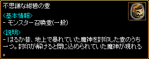 |
一部の秘密ダンジョンやギルドダンジョン完了時と、 パーティーボスモンスター討伐時に一定確率で壺を 入手。 不思議な紺碧の壺からは、壺使用者と同Lvの一般モンスターが出現。 ※転生者は、パーティー内にLv差が100以上のメンバーがいると討伐時の経験値が1になるので注意。 |
| 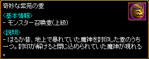 |
奇妙な紫苑の壺からは、Lv999上級モンスターが出現。 |
| 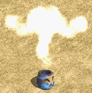 |
壺は取引可能。 街/冒険家協会/ギルドバトルフィールド/攻城戦フィールドなどを除く狩場で使用可能。 壺を使用するとモンスターが出現。 |
| 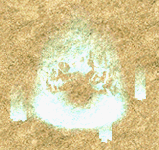 |
制限時間内に討伐できなかった場合、 モンスターは自動的に消滅。 |
 |
制限時間内に討伐すると、宝石箱を入手できる。 不思議な紺碧の壺から出現する一般モンスターを倒すと、紺碧の宝石箱を入手。 |
| 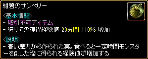 |
紺碧の宝石箱から出現する紺碧のサンベリー 有効期間なし その他の仕様は休息の植木鉢のベリーと同様。 |
| 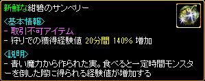 |
紺碧の宝石箱から出現する新鮮な紺碧のサンベリー |
| 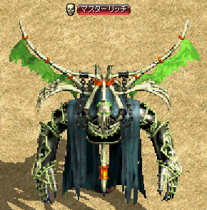 |
奇妙な紫苑の壺を使用すると、 Lv999の第一形態モンスターが出現。 第一形態モンスターを制限時間150秒以内に倒すと、 紺碧の宝石箱を入手。 さらに、Lv999の第二形態モンスターが出現。 |
| 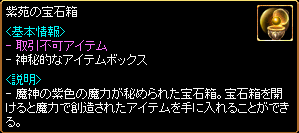 | 第二形態モンスターを制限時間600秒以内に倒すと、 紫苑の宝石箱を一定確率で入手。 紫苑の宝石箱からは、錬成関連アイテムが出現。 |
不思議な紺碧の壺/奇妙な紫苑の壺 比較
| 不思議な紺碧の壺 | 奇妙な紫苑の壺 | |
|---|---|---|
| 画像 | ||
| 制限時間 | 60秒 | 第一形態 150秒 第二形態 600秒 |
| モンスターLv | 壺使用者と同Lv （最小Lv200） | Lv999 |
| モンスター種類 | インプロードZin キラーディーZin グールボアZin スレンダーマンZin レイジストZin スカルヘッドZin エンパZin デスマーチZin マモンZin スカルソルジャーZin サタナキアZin ブルレイダーZin ブラッドイーグルZin リリスZin ヘルバッファロZin ディップダークZin ウッドボイルZin スカルブレイダー |
（第一形態） マスターリッチ デーモンストーカZin （第二形態） アークデビル アクアドラゴン ヴァルキリー ドラゴート |
| 与ダメージ | 通常ダメージ | 1 （固定） |
| 経験値 | Lv・種類・討伐時間による | 1 （固定） |
| 報酬 | 紺碧の宝石箱 1個 （100％） | 第一形態 紺碧の宝石箱 1個 （100％） 第二形態 紫苑の宝石箱 1個 （一定確率） |
| 報酬対象 | 壺使用者のパーティーメンバー全員 | 攻撃した人全員 |
※週末は20％の確率で討伐後の報酬が2倍になり、宝石箱を2個獲得できる。
出現モンスター
| 不思議な紺碧の壺 出現モンスター |
|---|
| 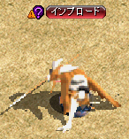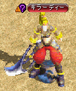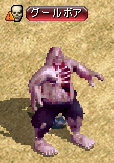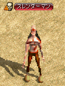 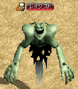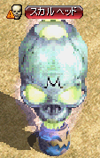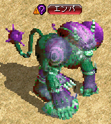 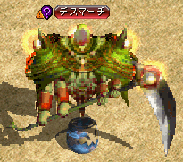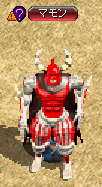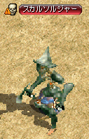 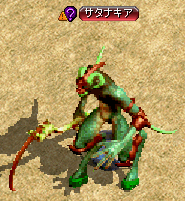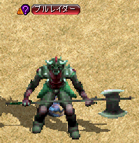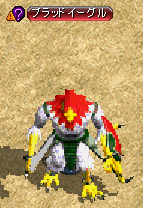 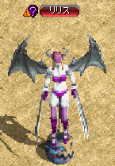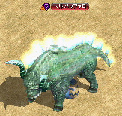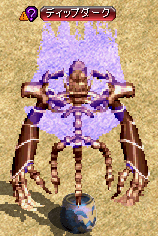 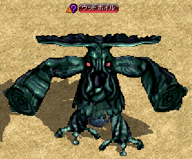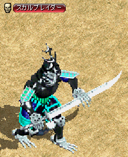 |
| 奇妙な紫苑の壺 出現モンスター 第一形態 |
| 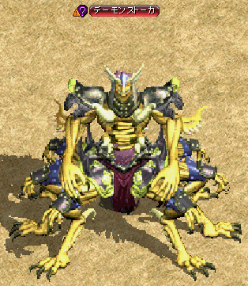 |
| 奇妙な紫苑の壺 出現モンスター 第二形態 |
    |
※2018年10月10日アップデートより、宝石箱の出現アイテムがリニューアルされました。
| 紺碧の宝石箱 出現アイテム | ||
|---|---|---|
| 果実 | 持続時間 | |
| ソラの育成剤[ゴールド] | 取引不可アイテム 植木鉢の成長率を 75％ に変更 |
|
| 紺碧のサンベリー | 取引不可アイテム 狩りでの獲得経験値 20分間 110％ 増加 |
|
| 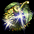 | 新鮮な紺碧のサンベリー | 取引不可アイテム 狩りでの獲得経験値 20分間 140％ 増加 |
| サンチェリー | 取引不可アイテム 狩りでの獲得経験値 60分間 140％ 増加 |
|
| 新鮮なパインベリー | 取引不可アイテム 狩りでの獲得経験値 60分間 150％ 増加 |
|
| 紫苑の宝石箱 出現アイテム | ||
|---|---|---|
| アイテム | 説明 | |
| 発火石 30個 |
炎の石を製作するための材料の一つ。断熱石と合わせて使うことで、黒き炎の力を引き出せる。 ※ レベル差が少ないモンスターを倒した時に、モンスターが落とすことがあります |
|
| 断熱石 30個 |
炎の石を製作するための材料の一つ。発火石と合わせて使うことで、黒き炎の力を引き出せる。 ※ レベル差が少ないモンスターを倒した時に、モンスターが落とすことがあります |
|
| 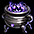 | 黒き炎の欠片 20個 |
神秘的な力を持った黒い炎の小さな欠片。ほんのひと滴ほどの大きさだが、その中に秘められている力は膨大で、装備の錬成材料に最適。 ※ 1日クエストで入手可能 |
| 神秘の石 1個 or 5個 |
古代都市タティリスの力が封じ込められている神秘的な石で、強烈なエネルギーを発している。ギルドホールにいる考古学者グラン、古美術商ネネに渡すと様々なアイテムと交換してくれる。 ※ 古代都市タティリスの遺跡で入手できる他、ユニーク以上のアイテム分解でも入手可能 |
|
| 結晶石 1個 or 3個 |
タティリス秘伝の破壊の力で、ユニークアイテムを分解した時に、稀に取り出すことができる美しい石で、古代タティリス人は‘魂が宿る石’という意味で‘ソウルストーン’とも呼んでいたらしい。 ※ ユニークアイテムを分解することで入手可能 |
|
| 炎の石 | 断熱石を加工して作った小さな型の中に、発火石と黒き炎の欠片を1：1の割合で混ぜ合わせて作った炎の石。強力な火力を持つため小さな石しか作ることができず、何かに使用する場合には、さらに加工が必要だが、現状でも非常に高価。 ※ 錬成材料の購入に使用できます。 ※ ランディスが、炎の石に大変興味を持っているとの噂がある・・・ |
|
| 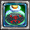 | 再錬成剤 | 錬成されたアイテムに使用すると、解放された神秘的な能力を封印し、元のアイテムに戻す再錬成を行う特殊な薬品。称号は変動しない |
| 黄金のチケット | 黄金の泉より出現するといわれる金色に輝くチケット。本物の黄金かは分からないが、古都ブルンネンシュティグの鑑定士ティレンと武器職人サナがこのチケットを集めているという噂がある。 | |
| 揮発性の炎の 錬成剤 |
神秘に満ちた黒き炎の欠片を浸して作った浄水。これを使って装備を強化することができる。密封されていないため取引不可。 ※ 錬成剤のみで錬成する場合、称号は引き継がれませんが、特殊な補助剤を購入して錬成剤と一緒に使用すれば称号を引き継ぐことが可能です。 ※ 取引不可アイテム |
|
※黄金のチケットは、古都ブルンネンシュティグ 鑑定士ティレン（90.109）や武器商人サナ(98.53)に渡すと、交換するキャラクターの職業に応じたランダムな番号の賭博師武器のかけらと交換できる。
| 壺を入手可能な秘密ダンジョン | |
|---|---|
| 秘密ダンジョン | 制限Lv |
| 河口ダンジョンの隠された宝物部屋 | 160～200 |
| ソルティケーブの混沌の空間 | 190～230 |
| 呪いの墓に建つ呪われし塔 | 195～235 |
| 過ぎし栄光の展示場にある遺物保管所 | 250～290 |
| キングクラブの巣 | 260～300 |
| ハイランド洞窟の堕落した部族 | 290～310 |
| ダークソウルの封印場所 | 290～330 |
| レッドアイの隠されたアジト | 320～345 |
| レッドアイ特殊エージェントのアジト | 340～360 |
| フォーリン望楼の隠された地下監獄 | 355～405 |
| カダーム・ギガスの寺院 | 405～435 |
| ダークエルフ王宮の隠された倉庫 | 440～490 |
| スパインホールのミステリーゾーン | 450～500 |
| 呪いを受けたミズナ洞窟の隠された洞窟 | 500～550 |
| 名も無き遺跡のデーモンキングのねぐら | 535～585 |
| ヘソパルの洞窟 | 550～600 |
| モリネルタワーの隠された研究所 | 580～620 |
| ビックマウスダンジョンのラットキング区域 | 600～640 |
| 閉鎖された時空研究所 | 651～680 |
| ヴァンパイア・キングダム | 681～710 |
| 壺を入手可能なギルドダンジョン | |||
|---|---|---|---|
| ギルドダンジョン | 適正Lv | ホールランク | 入場条件 |
| 古代都市タティリス遺跡 入口 | 1～100 | 1以上 | - |
| 古代都市タティリス遺跡 B1 | 101～200 | 1以上 | 入場券 （タティリス遺跡のかけら20個） |
| 古代都市タティリス遺跡 B2 | 201～300 | 2以上 | 入場券 （タティリス遺跡のかけら40個） |
| 古代都市タティリス遺跡 B3 | 301～400 | 2以上 | 入場券 （タティリス遺跡のかけら60個） |
| 古代都市タティリス遺跡 B4 | 401～500 | 3以上 | 入場券 （タティリス遺跡のかけら80個） |
| 古代都市タティリス遺跡 B5 | 501～600 | 3以上 | 入場券 （修復済みのタティリス遺跡の出土品1個） |
| 古代都市タティリス遺跡 B6 | 601～700 | 4以上 | 入場券 （修復済みのタティリス遺跡の出土品2個） |
| 古代都市タティリス遺跡 B7 | 701～800 | 4以上 | 入場券 （修復済みのタティリス遺跡の出土品2個） |
| 古代都市タティリス遺跡 B8 | 801～900 | 5以上 | 入場券 （修復済みのタティリス遺跡の出土品5個） |
| 古代都市タティリス遺跡 B9 | - | - | コスミックストーン （土日のみ） ※ |
※B9はギルドホールランク5の場合、リーダーのみコスミックストーンが必要、他のパーティーメンバーはコスミックストーンを所持していなくても入場可能。
ギルドホールランク4以下の場合は、パーティーメンバー全員がコスミックストーンを所持している必要がある。
| 壺を入手可能なパーティーボスモンスター | ||
|---|---|---|
| 出現マップ | パーティーボスモンスター | Lv |
| 廃坑 Ｂ１０ | ダークシャドウ | 165 |
| 呪いの墓 Ｂ１ | リッチ | 220 |
| 小さい傭兵の墓 Ｂ１ | ソウルガーダー | 250 |
| キャンサーの巣 Ｂ４ | タートルドラゴ | 285 |
| スウェブタワー １１Ｆ | デスナイト | 305 |
| フォーリン望楼 地下 | 狂気の指揮官Zin | 365 |
| 暴かれた納骨堂 Ｂ１ | デスピンサー | 400 |
| ダークエルフ王宮 １Ｆ | ダークエルフ将校Zin | 460 |
| 呪いを受けたミズナの洞窟 Ｂ１ | 悪夢のサソリZin | 515 |
| 兵営 B1 | 火炎の鬼Zin | 545 |
| 名も無き遺跡 Ｂ２ | ブレイマZin | 560 |
| 旅館 １Ｆ | サタンZin | 580 |
| ビックマウスダンジョン Ｂ４ | ラットキング | 620 |
| ガルカス悪魔軍集結地 Ｂ１ | オーガゼネラル | 660 |
| 時の森（1層目） | エルフ守護者Zin | 660 |
| 時の森（3層目） | ハゲワシ闘士Zin | 710 |